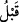
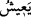

diğer hanımlarına karşı bununla övünürdü.
İmam Sa‘lebî şöyle rivayet eder: “Cenâb-ı Hak âyet-i kerimede “ __WORD__ (daha önce)”
lâfzını kullanmıştır. Çünkü ondan sonra bir kimse zuhûr edecektir ki O’nun ismini de
Cenâb-ı Hak verecektir. O’nun (Hz. Peygamber’in) yüce ismi, ism-i ilâhîden
türemiştir.” Nitekim Hassân (r.a.) bu hususta şöyle der:
O’nu yüceltmek için O’na kendi isminden isim vermiştir
O, arşın sahibi Mahmud’dur, bu ise Muhammed’dir
Ey Hâce! Adının Muhammed olmasından ötürü
İşin sonunda senin ümmetin mahmûd/övülmüş oldu
“Yahya” kelimesi Arapça ise de Arap olmayan bir isim olduğu daha âşikârdır. “__WORD__”
ve “__WORD__” kelimeleri gibi fiilden isme çevrilmiştir. Yahya (a.s.)’ın bu ismi alması, ya
annesinin rahminin kendisiyle (yeniden) dirilmesi sebebiyle (çünkü annesi çocuk
doğuracak durumda değildi) veya Allâh’ın dininin onun çağrısıyla dirilmesi sebebiyle
ya da kendisine verilen ilim ve hikmetle dirilmesi dolayısıyladır. Burada Allâh’ın
nûruyla ve ilmiyle ihyâ etmediği kimsenin ölü olduğuna delil vardır.
Yahya (a.s.)’a bu ismin verilmesinin sebeplerinden birisi de, Zekeriya (a.s.)’ın
zikrinin (adının) Yahya (a.s.) vâsıtasıyla ihyâ edilmesi, canlı tutulmasıdır. Nitekim Hz.
Âdem (a.s.)’ın adı, Şit (a.s.); Nuh (a.s.)’ın adı da Sâm vasıtasıyla ihyâ edilmiştir. Bu
durum diğer peygamberler için de böyledir. Ancak Allah Teâlâ, Yahya (a.s.)’ın
doğumundan önce Hz. Zekeriyya hariç hiçbir peygamber için çocuğunda, Allah katından
verilmek üzere özel isim ve o peygamberde bulunan sıfatı toplamamıştır. Bu da
Allah’tan ona (özel) bir yardım olması içindir. Bu yardım özellikle Zekeriyya (a.s.)’a
mahsus kılınmıştır, çünkü o şöyle duâ etmişti: “Katından bana bir oğul lütfet.” Bu
ifadesinde Hz. Zekeriyya, hitap kâfı ile (senden) kinaye yapmak sûretiyle Allah
Teâlâ’yı daha önce zikretmiş, oğlunu ise veli kelimesi ile ifade edip daha sonra
getirmiştir. Allah da istediği oğlu ona vermek sûretiyle ikramda bulunmuş ve çocuğu da
Zekeriyya (a.s.)’ın durumunu gösterecek şekilde isimlendirmiştir. Bu durum ise Hz.
Zekeriyya’nın zikrinin canlı kalması, unutulmaması, anılmasıdır. Şeyh-i Ekber (k.s.)
böyle söylemiştir.
İmam Süheylî Kitâbü’t-ta‘rîf ve’l-i‘lâm’da şöyle der: “Yahya (a.s.)’ın adı ilk kitapta
“Hay” idi. Hz. İbrahim’in hanımı Sâre’nin ismi ise ‘doğurmayan’ anlamına gelen
“Yesâre” idi. Hz. Sâre İshak (a.s.) ile müjdelenince ona “Sâre” denildi. Bu ismi ona
Cebrâil (a.s.) verdi. Bunun üzerine Sâre, Hz. İbrahim’e: “Ey İbrahim benim adımdan
niçin bir harf eksiltildi?” diye sordu. Hz. İbrahim bu soruyu Cebrâil’e aktardı. O da:
“Onun adından alınan bu harf, peygamberlerin en üstünlerinden olan Hz. Zekeriyya’nın
oğlunun adına eklendi. Onun adı ‘Hayy’ idi, sonra ‘Yahya’ oldu.” diye cevap verdi. Bu